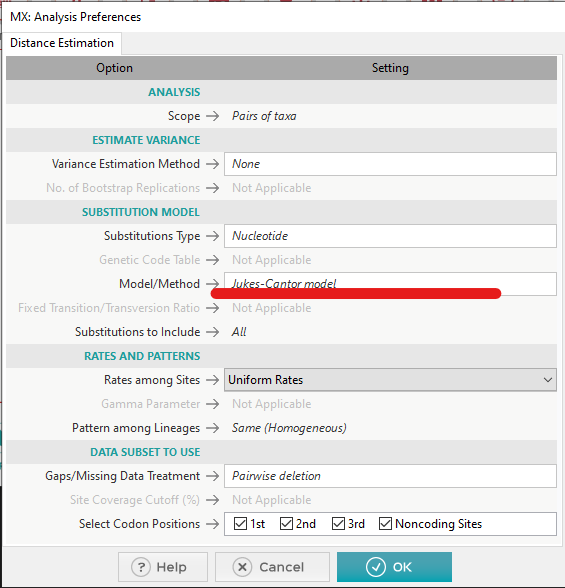

Interested? Contact muehlhaus@bio.uni-kl.de or schneike@bio.uni-kl.de
Phylogenetic trees are diagrams that visualize inferred evolutionary relationships between a set of organisms. Consider this tree diagram:
____ A
_|
| |____ B
______|
|______ C
Ancestors are shown as nodes on the tree, while the leaves represent the respective organisms. It tells you that A and B share a common ancestor, and that that ancestor shares a common ancestor with C. In other words, A and B are closer related to each other, than each of them to C.
A and B form a clade together with their common ancestor (also known as a monophyletic group) - a group of organisms that includes a single ancestor and all of its descendents that represent unbroken lines of evolutionary descent.
But based on what information do we construct such trees? There are different classes of approaches to this problem, but to stay beginner-friendy, only distance-based methods will be discussed in the scope of this project. For sake of completeness, other approaches include parsimony, maximum likelihood and Bayesian approaches to searching the possible tree space.
The first step in any (distance-based) phylogenetic tree reconstruction is the selection of the characteristic to infer evolutionary relationships from, and subsequently the determination of the phylogenetic distance between the organisms of interest based on that characteristic.
Any kind of characteristic of organisms can be used to try to infer phylogenetic relationships - like for example beaks of Darwin finches - but DNA sequences have proven to be incredibliy helpful to reconstruct phylogenetic trees, as the nucleotide alphabet is relatively simple and sequencing data has reached unparalleled throughput and accuracy. Likewise, there are a wide range of sophisticated methods to calculate phylogenetic distance based on DNA sequences.
In the scope of this project, you will take a step back and look at some classic evolutionary models that can be used to model phylogenetic distance based on DNA sequences.
A few important bits of jargon for the following chapters:
The pairwise proportional distance (or p distance) is the classical 'naive' approach to estimate pairwise distances between two sequences.
It is simply the ratio between substitution sites and the length of the sequences. Note that - as in all distances you will implement - both sequences have to be of the same length or have to be aligned before calculating distances. It is obtained by dividing the amount of substitutions by the total amount of compared nucleotides:
\(p = \frac{d}{L},\)
where
\(d = s + v\)
\(s : Transitions\)
\(v : Transversions\)
\(L : length\)
What are the advantages and weaknesses of this approach? Inform yourself.
To overcome the shortcomings of the simple proportional distance, many evolutionary models for biological sequences are available. Most of the time, sequence evolution by mutation is described as a stochastic process modelled by continuous-time Markov chains, with the alphabet (for DNA: A, C, G, T) as possible states.
For any sequence position, these models are then defining a substitution probability matrix based that acts as the stochastic matrix of the markov chain.
A basic understanding of markov chains may be beneficial, but not necessary. It is just important that these models define probabilities for transitions and transversions, and can be solved for a corrected pairwise distance that suffices the model substitution criteria.
The Jukes-Cantor model is the simplest form of these kinds of models. It makes no difference between transitions and transversions, meaning that all substitutions have the same substitution rate (\(\alpha\)). Also, all sites are modelled independently.
The substitution matrix is:
\[\begin{matrix} & \begin{matrix}A & & C & & G & & T\end{matrix} \\\\ \begin{matrix}A\\\\C\\\\G\\\\T\end{matrix} & \begin{pmatrix} -3\alpha&\alpha&\alpha&\alpha\\\\ \alpha&-3\alpha&\alpha&\alpha\\\\ \alpha&\alpha&-3\alpha&\alpha\\\\ \alpha&\alpha&\alpha&-3\alpha \end{pmatrix}\\\\ \end{matrix}\]
\(3\alpha t\) mutations would be expected during a time \(t\) for each sequence site on each sequence, leading to a correction factor for the proportional distance \(d_{JC}\) :
\[d_{JC}=-\frac{3}{4}ln(1-\frac{4}{3}p)\]
What are the advantages and weaknesses of this approach? Inform yourself.
The substitution matrix is:
\[\begin{matrix} & \begin{matrix}A & & & & C & & & & G & & & & T\end{matrix} \\\\ \begin{matrix}A\\\\C\\\\G\\\\T\end{matrix} & \begin{pmatrix} -2\beta-\alpha&\beta&\alpha&\beta\\\\ \beta&-2\beta-\alpha&\beta&\alpha\\\\ \alpha&\beta&-2\beta-\alpha&\beta\\\\ \beta&\alpha&\beta&-2\beta-\alpha \end{pmatrix}\\\\ \end{matrix}\]
It results in a corrected distance \(d_{K2P}\):
\(d_{K2P}=-\frac{1}{2}ln(1-2P-Q)-\frac{1}{4}ln(1-2Q)\),
where
\(P=\frac{s}{L}\)
\(Q=\frac{v}{L}\)
What are the advantages and weaknesses of this approach? Inform yourself.
You understand the following evolutionary distance models and are able to explain the differences between them (required in your final report) Also, you implement them in F# for the BioFSharp library:
As a demonstration of your implementations, as well as to show the differences between these models, You construct at least 10 adequate test sequences of equal length, and construct phyologenetic trees from them. Investigate the most interesting and obvious differences, and relate them to the different model assumptions.
Bonus: You implement a visualization method for phylogenetic trees for Cyjs.NET.
FSharpAuxFSharpAux.IOFSharp.StatsBioFSharpBioFSharp.IOPlotly.NETthe top of your script file should look like this:
#r "nuget: FSharpAux"
#r "nuget: FSharpAux.IO"
#r "nuget: FSharp.Stats, 0.4.1"
#r "nuget: BioFSharp, 2.0.0-beta6"
#r "nuget: BioFSharp.IO, 2.0.0-beta6"
#r "nuget: Plotly.NET, 2.0.0-beta9"
open FSharpAux
open FSharpAux.IO
open BioFSharp
open BioFSharp.IO
open FSharp.Stats
open Plotly.NET
BioArray, BioList, or BioSeq.
You can use the fact that all of these sequence types are implementing IEnumerable and can only contain nucleotides.
BioFSharp library
(PhylogeneticTree functions) and work with TaggedSequences:
open BioFSharp
let yourDistance (seqA: seq<IBioItem>) (seqB:seq<IBioItem>) = ...
//reconstruct a phylogenetic tree from tagged sequences
let myTree =
PhylogeneticTree.ofTaggedBioSequences
yourDistance // your distance function for either p, JC69, or K81 distance
yourSequences // your adequate nucleotide test sequences as tagged sequences
BioFSharp:
For that, you have to first install clustal omega, a very nice multiple sequence aligment tool.
You can use it directly in F# interactive via BioFSharp's ClustalOWrapper:
open ClustalOWrapper
let cw = ClustalOWrapper("path/where/you/extracted/clustal-omega-1.2.2-win64/clustalo.exe") // replace with real path from your machine here!
let sequences =
[
TaggedSequence.create "seq1" ("ATGAAAAA")
TaggedSequence.create "seq2" ("ATGAAACA")
TaggedSequence.create "seq3" ("ATGAAAAAAT")
TaggedSequence.create "seq4" ("ATGGAAAA")
]
let alignedSequences =
cw.AlignSequences(sequences,Seq.empty)
Suggested workflow
Read your fasta formatted sequences
Perform multiple sequence alignment \(A\)
for each implemented distance function \(dist\):
\(\quad\)reconstruct phylogenetic tree for \(A\) with \(dist\) function
\(\quad\)Write as newick format
\(\quad\)Visualize tree, for example on http://etetoolkit.org/treeview/
Nei, M. & Zhang J. Evolutionary Distance: Estimation 2006 https://doi.org/10.1038/npg.els.0005108
https://en.wikipedia.org/wiki/Models_of_DNA_evolution
https://www.cs.rice.edu/~nakhleh/COMP571/Slides/Phylogenetics-DistanceMethods-Full.pdf
https://www.megasoftware.net/web_help_10/index.htm#t=Models_for_estimating_distances.htm
https://www.megasoftware.net/mega1_manual/Distance.html
the MEGA software suit contains many evolutionary distance functions. You can use it as reference implementation to check wether your functions return correct results. To do that, download the GUI version, install it, and follow these steps:
Click the Distances button and choose pairwise distance:
Select a fasta file containing the sequences of interest, and choose the reference model from this dialogue:
